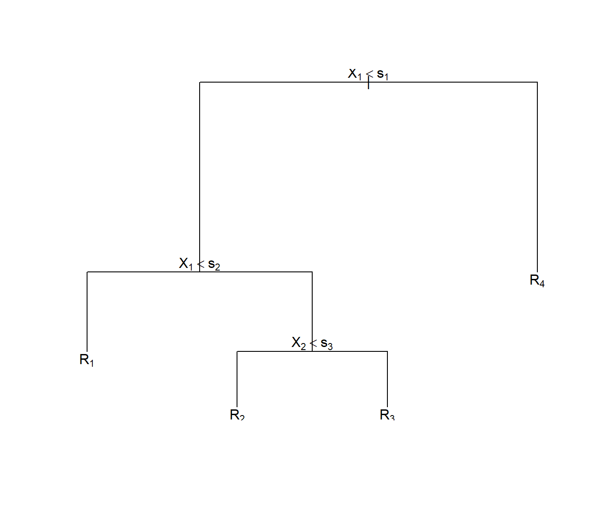
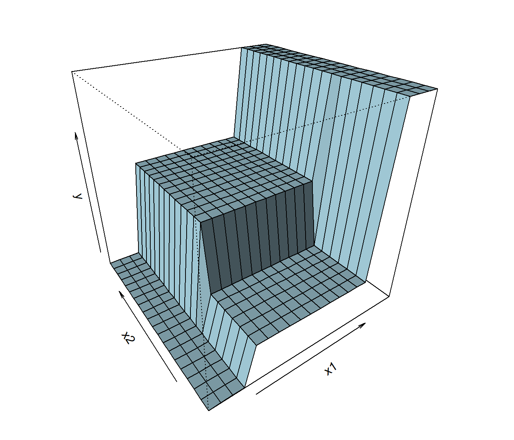

Capítulo 2 Árboles de decisión
Los árboles de decisión son uno de los métodos más simples y fáciles de interpretar para realizar predicciones en problemas de clasificación y de regresión. Se desarrollan a partir de los años 70 del siglo pasado como una alternativa versátil a los métodos clásicos de la estadística, fuertemente basados en las hipótesis de linealidad y de normalidad, y enseguida se convierten en una técnica básica del aprendizaje automático. Aunque su calidad predictiva es mediocre (especialmente en el caso de regresión), constituyen la base de otros métodos altamente competitivos (bagging, bosques aleatorios, boosting) en los que se combinan múltiples árboles para mejorar la predicción, pagando el precio, eso sí, de hacer más difícil la interpretación del modelo resultante.
La idea de este método consiste en la segmentación (partición) del espacio predictor (es decir, del conjunto de posibles valores de las variables predictoras) en regiones tan simples que el proceso se pueda representar mediante un árbol binario. Se parte de un nodo inicial que representa a toda la muestra (se utiliza la muestra de entrenamiento), del que salen dos ramas que dividen la muestra en dos subconjuntos, cada uno representado por un nuevo nodo. Este proceso se repite un número finito de veces hasta obtener las hojas del árbol, es decir, los nodos terminales, que son los que se utilizan para realizar la predicción. Una vez construido el árbol, la predicción se realizará en cada nodo terminal utilizando, típicamente, la media en un problema de regresión y la moda en un problema de clasificación.

Al final de este proceso iterativo el espacio predictor se ha particionado en regiones de forma rectangular en la que la predicción de la respuesta es constante. Si la relación entre las variables predictoras y la variable respuesta no se puede describir adecuadamente mediante rectángulos, la calidad predictiva del árbol será limitada. Como vemos, la simplicidad del modelo es su principal argumento, pero también su talón de Aquiles.

Como se ha dicho antes, cada nodo padre se divide, a través de dos ramas, en dos nodos hijos. Esto se hace seleccionando una variable predictora y dando respuesta a una pregunta dicotómica sobre ella. Por ejemplo, ¿es el sueldo anual menor que 30000 euros?, o ¿es el género igual a mujer? Lo que se persigue con esta partición recursiva es que los nodos terminales sean homogéneos respecto a la variable respuesta \(Y\).
Por ejemplo, en un problema de clasificación, la homogeneidad de los nodos terminales significaría que en cada uno de ellos sólo hay elementos de una clase (categoría), y diríamos que los nodos son puros. En la práctica, esto siempre se puede conseguir construyendo árboles suficientemente profundos, con muchas hojas. Pero esta solución no es interesante, ya que va a dar lugar a un modelo excesivamente complejo y por tanto sobreajustado y de difícil interpretación. Será necesario encontrar un equilibrio entre la complejidad del árbol y la pureza de los nodos terminales.
En resumen:
Métodos simples y fácilmente interpretables.
Se representan mediante árboles binarios.
Técnica clásica de apendizaje automático (computación).
Válidos para regresión y para clasificación.
Válidos para predictores numéricos y categóricos.
La metodología CART (Classification and Regresion Trees, Breiman et al., 1984) es la más popular para la construcción de árboles de decisión y es la que se va a explicar con algo de detalle en las siguientes secciones.
En primer lugar se tratarán los árboles de regresión (árboles de decisión en un problema de regresión, en el que la variable respuesta \(Y\) es numérica) y después veremos los arboles de clasificación (respuesta categórica) que son los más utilizados en la práctica (los primeros se suelen emplear únicamente como métodos descriptivos o como base de métodos más complejos). Las variables predictoras \(\mathbf{X}=(X_1, X_2, \ldots, X_p)\) pueden ser tanto numéricas como categóricas. Además, con la metodología CART, las variables explicativas podrían contener datos faltantes. Se pueden establecer “particiones sustitutas” (surrogate splits), de forma que cuando falta un valor en una variable que determina una división, se usa una variable alternativa que produce una partición similar.